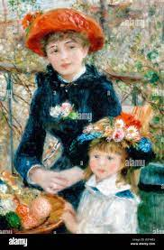
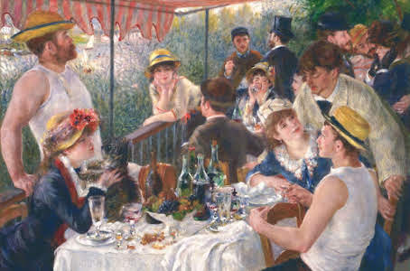
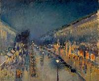
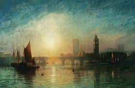

Impresion, sol naciente
Claude Monet (1872)
La pintura se caracteriza por su uso de pinceladas cortas y sueltas, que dan a la imagen una sensación de movimiento y dinamismo. El artista utiliza los colores para crear un efecto de luz y atmósfera. El cielo y el agua están representados con colores vivos y brillantes, que transmiten la sensación de un amanecer.

Mujer con sombrilla
Claude Monet (1875)
La obra "Mujer con sombrilla" de Claude Monet representa a su esposa Camille Doncieux y a su hijo Jean en un paseo por la campiña de Argenteuil. El cuadro fue pintado en 1875 y es una de las obras más conocidas del artista.

En la terraza
Pierre Auguste Renoir (1881)
La pintura se caracteriza por su uso de pinceladas cortas y sueltas, que dan a la imagen una sensación de movimiento y dinamismo. El artista utiliza los colores para crear un efecto de luz y atmósfera. Los vestidos de las mujeres están representados con colores vivos y brillantes, que transmiten la sensación de un día soleado.

El almuerzo de los romeros
Pierre Auguste Renoir
La obra "El almuerzo de los romaeros" de Pierre-Auguste Renoir representa un grupo de amigos de Renoir descansando en una terraza del restaurante Maison Fournaise a orillas del río Sena en Chatou, Francia. La escena muestra un clima de alegría popular que se asemeja a una obra anterior suya, "Baile en el Moulin de la Galette" (1876).

Paseo a orillas del mar
Joaquín Sorolla (1909)
Representa a su esposa Clotilde García, la cual sostiene una sombrilla, junto a su hija mayor, María Clotilde, caminando al atardecer por la playa de Valencia mientras la brisa marina hace ondear sus ropas.

Boulevard Montmartre de noche
Camille Pissarro (1897)
La obra "Boulevard Montmartre de noche" de Camille Pissarro representa una escena nocturna en el Boulevard Montmartre de París en la década de 1890. En la pintura, se puede ver una calle animada con farolas que iluminan las aceras y la calzada, creando un ambiente cálido y acogedor.

Bailarina basculando (Bailarina verde)
Edgar Degas (1879-1880)
La pintura muestra a una bailarina de ballet en un vestido verde, girando sobre su punta del pie. La bailarina está representada de forma fragmentaria, con sus brazos y piernas extendidos en direcciones diferentes. El fondo de la pintura es un escenario de teatro, con cortinas rojas y una lámpara de araña.

El parlamento del rio
Claude Monet (1904)
La obra "El Parlamento del Río" de Juan Manuel Blanes representa una escena de la batalla de Sarandí, una de las primeras batallas de la Guerra de la Triple Alianza. La pintura fue pintada en 1872 y es una de las obras más emblemáticas de la historia de Uruguay.